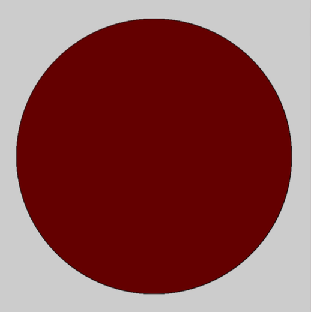

Logical Dot

We are going to make a circle that changes color when you click the mouse.
- Create a new sketch in Processing and add setup() and draw() methods.
- Set the size of your sketch in your setup() method to 800, 800.
- Draw an ellipse in your draw() method.
- Make your ellipse a nice color.
- In your draw() method, make it so that if the mouse is pressed…
- … you change the color of your ellipse.